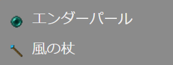
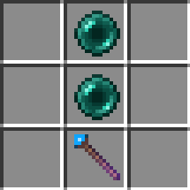
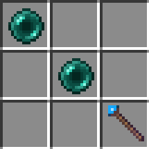
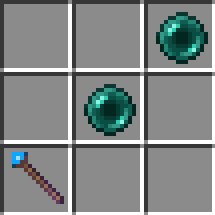
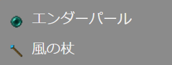
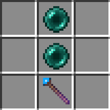
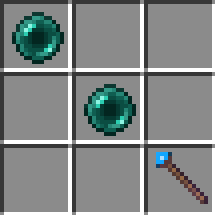
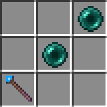

【繰風弾の杖】
はじめに
今回実装したものはウインドチャージを使っているので、繰気弾ならぬ繰風弾の杖として作成しています。
このアイテムは杖を使って繰風弾をコントロールできるのが特徴です。
Websocketサーバーと連携して▶スウィープロッドを実装した時に使っていた「ダッシュ＋スニーク」を実行する事で、以下のように繰風弾を頭上に召喚する事ができます。

ブロックが破壊できないのはそのままですが、通常のウインドチャージに加えて爆発によるダメージを付与する事で威力を上げています。
このアイテムは杖を使って繰風弾をコントロールできるのが特徴です。
Websocketサーバーと連携して▶スウィープロッドを実装した時に使っていた「ダッシュ＋スニーク」を実行する事で、以下のように繰風弾を頭上に召喚する事ができます。
ブロックが破壊できないのはそのままですが、通常のウインドチャージに加えて爆発によるダメージを付与する事で威力を上げています。
繰風弾の制御方法
以下のようにプレイヤーが杖を振った方向へ繰風弾をコントロールする事ができます。

ブロック単位で動かせるので、ある程度の細かいコントロールは可能です。
しゃがんだ状態で杖を振ると下降し、地中に潜らせる事もできます。
また、杖を持った状態でスニーク移動すると上昇します。

以下のように複数の繰風弾をコントロールする事もできます。

ブロック単位で動かせるので、ある程度の細かいコントロールは可能です。
しゃがんだ状態で杖を振ると下降し、地中に潜らせる事もできます。
また、杖を持った状態でスニーク移動すると上昇します。
以下のように複数の繰風弾をコントロールする事もできます。
繰風弾の処理方法
自身で処理する場合は、以下のように繰風弾の核を叩けば一撃で倒す事ができます。

これは相対する側にとっても同様で、核を叩く事で被害から免れる事ができます。
▶はやぶさの剣の射程距離内であれば、相手が空中であっても「はやぶさ斬り」を使って必中で倒す事もできます。

これは相対する側にとっても同様で、核を叩く事で被害から免れる事ができます。
▶はやぶさの剣の射程距離内であれば、相手が空中であっても「はやぶさ斬り」を使って必中で倒す事もできます。
「繰風弾の杖」の取得
本環境のビヘイビアパック／リソースパックを含めたアドオンパックを適用しておけば、以下の方法で「繰風弾の杖」が手に入ります。

▼レシピパターン

▶ネットショップ

クラフトする場合
▼必要な素材
▼レシピパターン

ショップで購入する場合
以下のショップで購入できます。▶ネットショップ
コマンドで取得する場合
以下はワールドオーナーやシステム組み込み用としてコマンドで取得する方法です。サーバーサイドの処理
今回の実装では「ダッシュ＋スニーク」時の召喚処理も含めて、杖による繰風弾のコントロールをサーバーサイドがメインで行っています。
また、イベントデータの詳細（Websocketサーバー用）のページでご紹介させて頂いたイベントデータを使って、以下の方法で繰風弾の移動先の座標を計算しています。
また、イベントデータの詳細（Websocketサーバー用）のページでご紹介させて頂いたイベントデータを使って、以下の方法で繰風弾の移動先の座標を計算しています。
- 前後左右方向のコントロール
ItemUsedイベント受信後、▶いなずまの弓実装時に利用した計算方法で移動先の座標を算出。- 下方向のコントロール
- プレイヤーがしゃがんだ状態を
ItemUsedイベントのバリアント値で検知するようにして現在位置の下の座標を算出。 - 上方向のコントロール
PlayerTravelledイベントでスニーク移動を検知した時に現在位置の上の座標を算出。
おわりに
実際に動く相手を杖でコントロールしながら当てようとすると思いのほか難しいので、今回の実装でヤムチャの偉大さを改めて感じさせられましたｗ
実用的な方法としては繰風弾で弾幕を張りながら相手に当てるか、以下のように壁や地中に潜らせておいて相手が通りかかったら攻撃をしかけるのがいいでしょう。


ちなみに、一度に召喚できる繰風弾の数に制限はありません。
今回は▶発射アイテムとしての杖を実装後、▶ダミーエンティティを作成して▶発射体エンティティとして発射する事で、サーバーサイドでのイベント検知を行っています。
実用的な方法としては繰風弾で弾幕を張りながら相手に当てるか、以下のように壁や地中に潜らせておいて相手が通りかかったら攻撃をしかけるのがいいでしょう。
ちなみに、一度に召喚できる繰風弾の数に制限はありません。
今回は▶発射アイテムとしての杖を実装後、▶ダミーエンティティを作成して▶発射体エンティティとして発射する事で、サーバーサイドでのイベント検知を行っています。